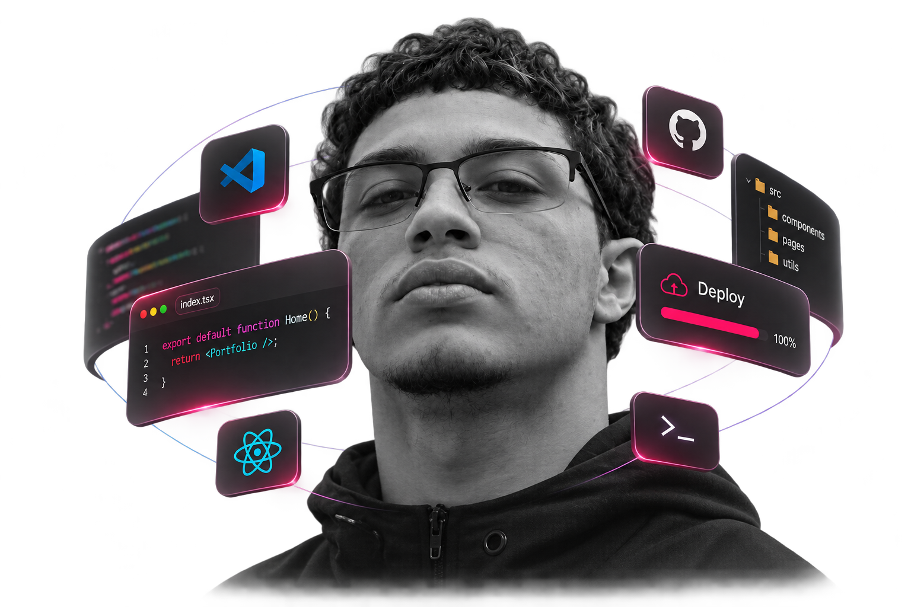

Desenvolvedorweb &aplicativos.
Sou Matheus Riquelme. Desenvolvo sites e aplicativos que dão forma a ideias e simplificam experiências.
Disponível para projetos freelance

Da primeira ideia à experiência final.
Sou Matheus Riquelme. Desenvolvo sites e aplicativos que dão forma a ideias e simplificam experiências.
Disponível para projetos freelance
